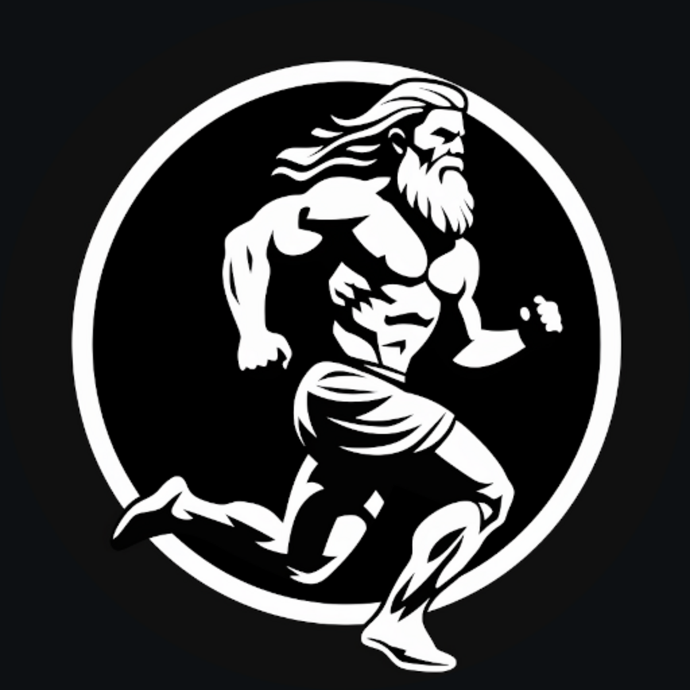

PerunYour runs, routes and rides — hidden as the secrets of an ancient, mystical forest.
A GPS tracker for running and cycling that keeps every trace on your devices, and syncs peer-to-peer to your desktop over Logos. No account. No servers. No prying eyes.
What is yours should stay yours — and what comes for it should be met with thunder.
Perun is the Slavic god of thunder and the storm — sky-father, lord of the sacred oak, keeper of order. He rides the heavens in a chariot of fire, and in his hand is the axe of lightning that always returns to him once thrown.
His eternal adversary is Veles, the horned serpent who lives among the roots of the world. Veles slips up from the dark to steal — cattle, waters, people — and drag them down to hoard where no light reaches. Each time, Perun hunts him across the sky and strikes, splitting oak and stone, until what was taken is returned. Then the rain falls, and the world is set right.
It is an old story about a simple idea, and it stands guard over the Dark Forest — the deep, unmapped place where a thing can stay hidden and safe.
Today the serpent wears a different face. Modern trackers take your movements, your routes, your home, and hoard them in databases you will never see. Perun takes the old bargain back. Your runs stay in the open sky of your own devices — struck through with lightning the moment anyone reaches for them.
Live map, splits, pace and elevation — the detail you want from a tracker, without the surveillance you didn't ask for.
Live GPS with a map that draws itself, and a full breakdown after — distance, splits, pace, elevation. Runs and bike rides alike.
Every track stays on your phone and your paired devices. Nothing is uploaded to a third party. There is no account to make.
Runs travel peer-to-peer over Waku to the Perun Analytics module on your Basecamp desktop — a bigger screen for splits and history, still no server in the middle.
Drop photos along the way as you go. Each becomes a waypoint on the map — and a frame in your ride film.
Out of signal in the hills? It records anyway and reconciles later. Local-first isn't a setting — it's the whole design.
Built in the open on the Logos stack. Read the code, build it yourself, verify the privacy claims for real.
Perun renders a cinematic video of your ride — the route drawing itself across a dark map, your annotation photos rising full-frame as the dot passes them, a quick cross-dissolve between shots.
It's built entirely on-device: no upload, no render farm, nothing leaves your phone. Pick the size, hero the photos or tuck them in a card, and share the clip. A paused stretch even shows honestly, as a dashed bridge — because a film of your ride should be true to it.
The phone captures. The desktop analyses. They find each other over Logos — you never touch a server.
Add the F-Droid repository below in your F-Droid client, then install Perun. Signed, reproducible, updates in place.
https://apps.vpavlin.xyz/fdroid/repo
Add this package repository in Basecamp's package manager, then install Perun Analytics for splits, elevation and history.
…/vpavlin/perun/master/repo/logos-repo.json